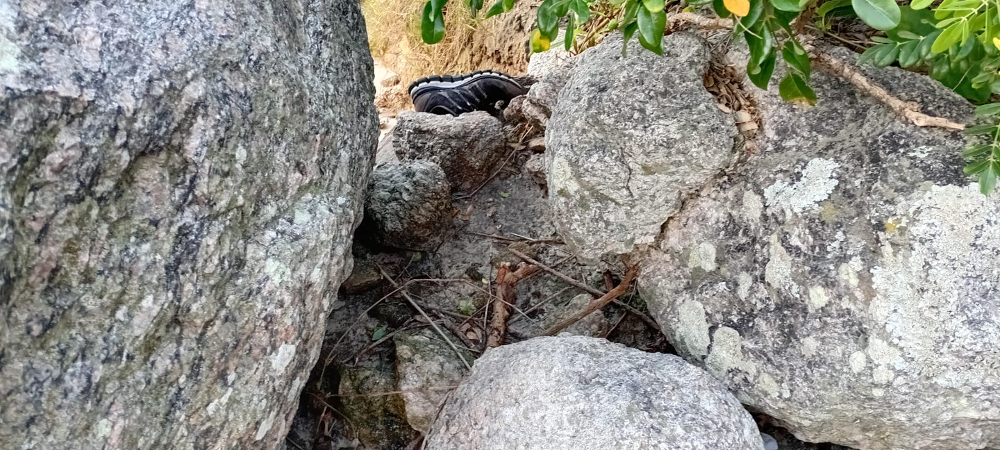
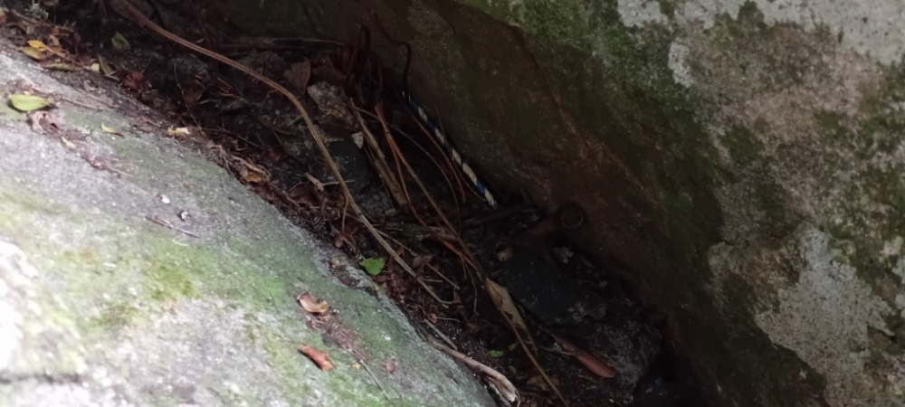
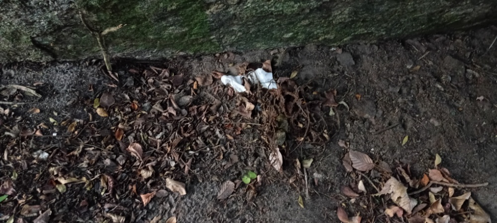
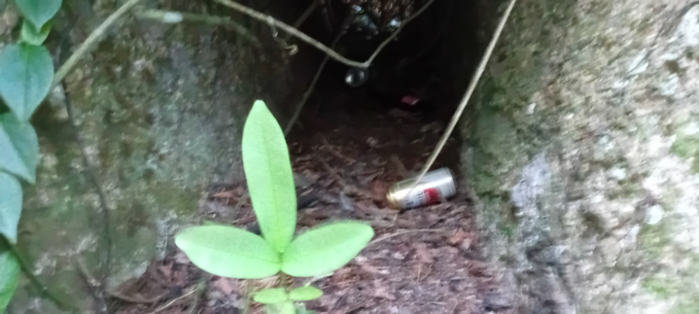
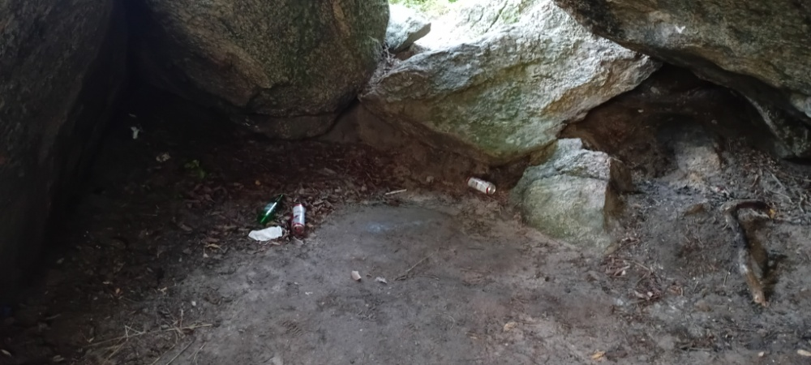
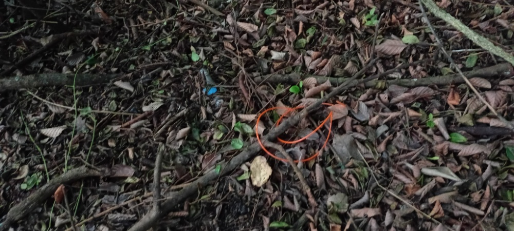

O Contexto da Caminhada Perceptiva
A Trilha das Quatro Ilhas é um dos patrimônios ecológicos e turísticos de Bombinhas - SC. Este diagnóstico foi conduzido de forma individual focado em uma área delimitada de amostragem: os primeiros 20 metros do acesso principal da trilha, logo na transição com a faixa de areia da praia.
Metodologia e Percepção: Diferente de projeções pessimistas comuns, a trilha apresentou-se surpreendentemente bem conservada e limpa em sua estrutura geral. Contudo, a ausência de infraestrutura básica de coleta (lixeiras públicas) no início do trajeto gera um gargalo onde pequenos resíduos descartados ou trazidos pelo vento acabam retidos nas margens da vegetação de restinga.
Métricas do Ecossistema
Banco de Imagens e Triagem de Resíduos
Evidências fotográficas registradas in loco e suas respectivas classificações e diagnósticos.

Foto do Calçado (Tênis)
Calçado Abandonado (Tênis)
Perda por dano estrutural durante a caminhada ou abandono intencional de item avariado.

Foto dos Canudos Plásticos
Canudos Plásticos
Consumo de quiosques ou ambulantes da praia levados pelo vento ou descartados incorretamente por banhistas.

Foto dos Fragmentos de Papel
Papéis e Embalagens
Queda acidental de notas, recibos ou invólucros leves de alimentos industrializados transportados por pedestres.

Foto das Latas de Alumínio
Latas de Alumínio
Consumo de bebidas alcoólicas ou refrigerantes associado a momentos de lazer nas imediações da entrada.

Foto das Garrafas de Vidro
Garrafas Longneck
Descarte por usuários noturnos ou transeuntes de fim de tarde que utilizam o início da trilha como refúgio social.

Foto de Fios e Cabos
Fios e Cabos Desconectados
Resíduo oriundo de manutenção elétrica informal externa ou trazido e descartado pontualmente à margem.
Discussão dos Padrões Observados
A amostragem indica uma forte presumível predominância de resíduos comerciais e recreativos de uso único, ligados diretamente à dinâmica urbana e turística da Praia das Quatro Ilhas.
A hipótese de que o interior da trilha estaria degradado caiu por terra: o ambiente está majoritariamente limpo e preservado. Isso significa que o problema ecológico é superficial e focado essencialmente na fronteira de acesso.
Mapa de Hotspots
Localização georreferenciada do trecho analisado na entrada da trilha.
Zona ativa: Raio de 0 a 20 metros a partir da transição com a faixa de areia.
Dilemas Éticos e Justiça Ambiental
Indo além dos dados ecológicos brutos: uma reflexão estruturada sobre a responsabilidade moral, social e estrutural do consumo e do lixo.
1. Diagnóstico de Impacto Socioambiental
Visitantes temporários, turistas e frequentadores sazonais da praia que utilizam a entrada da trilha como extensão recreativa. Contudo, a própria governança local gera passivamente o problema ao falhar na provisão de recipientes de lixo.
A biodiversidade local da restinga de Quatro Ilhas (vetores microbianos, fauna silvestre) e a própria comunidade de Bombinhas, cujo motor econômico depende diretamente da preservação intocada de suas belezas naturais.
Privatização do prazer do consumo imediato por indivíduos (descarte invisível), enquanto os custos de remediação ecológica, impacto visual e riscos de acidentes são socializados para o ecossistema coletivo e trabalhadores da limpeza pública.
2. Painel Crítico de Dilemas Éticos
"É justo destinar meu lixo para outros lugares?"
Modelos de coleta terceirizada e centralizada removem o lixo de centros urbanos e turísticos populosos para aterros sanitários sanitariamente isolados, diminuindo riscos imediatos de saúde pública local.
Isso transfere a carga de poluição sistêmica e desvalorização imobiliária/social para regiões periféricas ou rurais, externalizando o custo ético do nosso padrão hiperconsumista.
"Quem deve ser responsável pelo destino final?"
A responsabilidade inicial deve recair sobre as corporações que fabricam embalagens plásticas e as prefeituras que gerenciam a infraestrutura de coleta municipal.
O consumidor final possui agência moral direta. Isentar o indivíduo do dever civilizado de carregar seu próprio lixo de volta na ausência de lixeiras perpetua a passividade ética ambiental.
"É ético consumir descartáveis plásticos?"
Plásticos de uso único trazem assepsia, baixo custo e acessibilidade de consumo para alimentos e bebidas em larga escala, viabilizando operações logísticas globais.
Produzir um polímero sintético indestrutível cuja utilidade dura 5 minutos (como um canudo plástico) e que persistirá por séculos intoxicando solos e águas é um contrasenso ético injustificável.
Síntese Prática & Juízo de Solução
A solução mais ética e coerente para o ecossistema costeiro de Bombinhas reside na Responsabilidade Compartilhada. É urgente que o município instale contentores ecológicos nas transições de trilhas, mas cabe unicamente ao cidadão assumir o dever ético de reter seus resíduos até encontrar o descarte seguro.